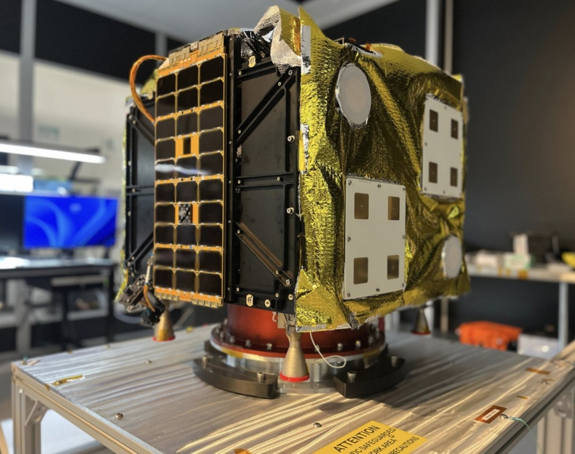

Executive Summary
AstroForge, an asteroid mining startup, says the spacecraft it will launch in 2027, Autonomy-1, will carry no radio able to receive commands from Earth. Once the vehicle separates from the rocket, no instruction from the ground reaches it, and every flight decision falls to Solo, the transformer-based control model the company built in-house. This article looks at where that decision came from and what it leaves out.
What moved the company was a calculation about money. The two options CEO Matthew Gialich laid out were these: spend around $200 million on a ground network of dishes around the world, or try to remove that network with a model. Given that past asteroid missions ran on 100 flight controllers per eight-hour shift, there was only ever one side this company could take. What Solo learned, though, is test data from individual subsystems, and the model has never flown in space.
Sections 1 through 4 follow what the company has said and what the record of last year's Odin mission shows. The question in section 5 is one this article raises. When a decision that cannot be undone is handed to a model, what does the training data have to prove?
Key figures
Source: Tim Fernholz, AstroForge is putting AI in command of its next spacecraft, TechCrunch (2026-09-22).
Zero
Earth-command radios aboard
That is the current plan. The CEO added the caveat that the team will probably win the argument by launch
$200M
Cost of its own ground network
The price of putting up five dishes around the world and operating them. This is the comparison the company drew
About 2,500
Sensors the intelligence layer trained on
The number of sensors in the spacecraft. How much training data was used does not appear in the story
100
Controllers per shift on a past mission
OSIRIS-REx ran this many operators on each eight-hour shift. Not a scale a startup can carry
A Probe That Leaves Its Radio Behind
The AstroForge plan TechCrunch reported on September 22 fits in one sentence. The next spacecraft will not carry a radio that can receive commands from Earth. Matthew Gialich, the company's co-founder and CEO, put it this way: "I don't plan on flying radios that can receive from Earth on Autonomy-1. We have to go all in right now."
The rocket carrying this vehicle up is worth a look too. AstroForge's first autonomous spacecraft rides the first rocket Stoke Space ever launches, in 2027. NASA is backing that mission, and it is set to gather scientific data about the sun. So a spacecraft that takes no commands from Earth will ride an untested rocket with someone else's science payload aboard.

Solo fills the place where the radio would have been: a control stack the company built itself, in three layers, as laid out by Armand Awad, head of flight software. At the bottom sit traditional control algorithms. Above them are models trained on test data for specific subsystems such as power generation or navigation. On top is an overall intelligence layer, and that last layer trained on about 2,500 sensors in the spacecraft. Its job is to spot anomalies and resolve them on its own.
The example Awad gave is unexpectedly small. The spacecraft realizes it has lost track of its position, correlates a power anomaly to trouble in its star tracker, and then fixes the whole thing, which in Awad's words means "probably turning it on and off in this case." How large a thing the company pictures autonomy being is a point any fair assessment of this plan has to set down next to the rest.
Gialich narrows the scope of the plan without prompting. "I'm not saying I'm going to make general spacecraft autonomy or general autonomy for the world. I'm making a constrained autonomy at a very low sensor input, following the basic training of a transformer model." Put into the vocabulary of self-driving, that is less a driver who handles every situation than a feature that runs only inside a defined set of conditions.
One thing deserves to be stated precisely. This plan is not settled. Immediately after the quote above, Gialich adds: "The team's probably going to talk me into it by the time we fly it. But right now, I'm telling them no radios." A spacecraft without a radio is not something the company has completed but the direction the CEO is pushing today, and the story carries that caveat in the same breath.
The company says it has to go all in, but it is placing that bet in stages. Solo goes up first on DeepSpace-2, set to launch alongside Intuitive Machines' third moon mission by the end of this year. That flight runs in shadow mode. The model makes calls, the calls do not move the spacecraft, and engineers grade them afterward. Given that the first use of a neural network to control a satellite's positioning in orbit came only last year, there is almost no precedent in this field for what Solo is being asked to do.
A Company That Cannot Buy a Hundred Controllers
The most candid part of this decision is the motive. The criterion Gialich gave in the story is neither safety nor performance. It is price. "The trade for me is: Do I go build my own ground network, which is going to cost [around] $200 million to put up five dishes around the world and then do operations on it, or do I try to remove it with a model?"
Set the two sides next to each other and it becomes clear why the arithmetic tips one way. AstroForge was founded in 2022 and has raised $56 million in venture funding. Everything the company has raised to date comes to less than a third of the price of a single ground network. On the other side sits the scale of missions run by national agencies. OSIRIS-REx, NASA's asteroid sample-return mission, ran with 100 flight controllers on every eight-hour shift. The distance between an organization that can carry that number and one that cannot is what is setting AstroForge's design.
Why the ground network runs that expensive is something the story explains separately. There are only a limited number of antennas on Earth big enough to transmit to spacecraft hundreds of thousands of miles away, and the windows of time in which to do it are small. What the moment of talking to Odin required was pointing a dish 32 meters across to within 0.15 degrees of centerline. With several missions wanting such dishes at once, simply being pushed back in the queue cut into the sky AstroForge could use.

The motive for adopting AI is not always technical confidence. When there is no money to put people on the job, filling that place with a model comes first. What is rare about AstroForge's answer is that it does not hide the order, and says it in dollars.
This structure is familiar outside the space industry too. Work done under human eyes lands on the books as a fixed cost, while a model, once built, lands as an asset that costs close to nothing to copy. In the ledger those two lines look nothing alike. Whether the quality of the judgment is the same is not something the ledger reports. What makes the problem AstroForge faces unusually hard is that the result of this trade, once wrong, is over.
Odin Was Lost on the Ground
The reason the company turned in this direction lies in last year. In February 2025 AstroForge launched Odin, its first deep space spacecraft. The objective was to identify whether its own models had correctly located a metallic asteroid rich in platinum group metals. Separation and power-up went to plan. What came after did not.

Building Odin took less than ten months and about $3.5 million. The company set that against a comparable NASA mission that cost roughly $95 million for the spacecraft alone. It also assigned Odin a 30% chance of success before launch and flew it anyway. The same hands are the ones now handing judgment to a model.
What broke was not the spacecraft. The mission debrief the company published later puts the cause this way: "We discovered that one station was transmitting with the wrong polarization, while another had incorrect pointing coordinates." The primary ground station in Australia ran into technical issues that delayed the planned first communication, and another key station lost a power amplifier the day before launch. Commands could not go up and data could not come down. The company wrote that it did not expect to have that many issues with that many ground stations, and rather than push the blame onto the stations it settled the matter as its own failure to secure backup stations early in the mission.
There were clear signs Odin was alive. Seven hours after launch, an amateur radio operator in Germany running a 22-meter dish caught Odin's signal, and a second signal was detected fifteen hours in. That meant the spacecraft had booted and was putting out radio. The company sent commands eighteen hours a day, and a sign of one being received never came. By the time the debrief was written Odin was past the Moon, about 270,000 miles out, roughly 430,000 kilometers, and the company wrote that the chance of talking with it was minimal.
What matters most in this episode is where the failure sat. Nothing that failed was aboard the spacecraft. Odin was doing its job, and the dishes that should have confirmed as much were not standing up properly. The lessons the company drew from the same event all pointed at thickening the ground side. Have the spacecraft transmit a consistent beacon automatically on boot-up, build redundancy across multiple ground station networks and geographic regions, and run end-to-end testing in the flight configuration itself, down to simulating deep space signal strength.
The question Gialich pulled out of the event, though, points somewhere else. "Would that have been recoverable with all the data on the spacecraft? I don't know, but I can tell you nothing onboard tried it, and I would love something onboard to try if the spacecraft is unrecoverable at launch." Read that way, what Odin lacked was the judgment to save itself. Push the reading to its end and the ground network stops being something to reinforce on the next spacecraft and becomes something to delete.
When Something Happens the Test Data Never Held
The range the story gives for what Solo looked at and learned from is narrow. Test data for individual subsystems, and about 2,500 sensors in the spacecraft. Neither volume nor duration appears. One thing is certain, which is that Solo has never flown in space, and its first flight test is set for shadow mode at the end of this year.
Anyone who has actually deployed machine learning will feel a familiar worry here. When the situations seen in training and the situations met after deployment come apart, the model's performance degrades. The degradation itself can be anticipated, which makes it the less frightening half. The frightening half is that the model does not know. On inputs that have gone outside the distribution the output is still crisp and confident. No signal of being wrong rides along with it.
One example has already played out in space. That first case the story cites, a neural network taking over a satellite's attitude control in orbit, happened on a 3U nanosatellite launched in January 2025. The controller was trained entirely inside simulation. And one of the things the researchers set down alongside their success is the points where the simulation and the real satellite's behavior diverged. Even in the narrow job of holding one satellite's attitude, the world that was learned and the world that is came apart.
So safety engineering usually builds this in two layers. First, attach something that measures the distance between the training distribution and the current input, and set the safe operating envelope as a number. Second, when operation leaves that envelope, the system stops judging on its own and hands control to a human. Takeover requests in self-driving and safety shutdowns in industrial equipment belong to the second layer. The device is added not because the model is untrustworthy, but because the model cannot recognize the moment it has become untrustworthy. The proposal to measure distribution shift as a distance, define safe operating limits from it, and halt operation or hand it to a human past that threshold is written out plainly in the autonomous systems evaluation literature, and a review organizing techniques for recognizing out-of-distribution inputs from a safety assurance standpoint has appeared as well.
What Autonomy-1's design drops is precisely that second layer. With no device able to receive commands from Earth, the party to hand control to does not physically exist. It does not mean a person notices late. It means that even noticing leaves nothing to do.
How much of that gap does a shadow mode flight fill? On DeepSpace-2, Solo takes sensor values from the real space environment and makes calls, and those calls are never executed, remaining only as a record. As the place where the model first meets inputs it did not see in ground testing, it is worth a great deal. What can be confirmed there, though, is only judgment about what actually happened on that mission. A smooth flight grades judgment about a smooth flight. The thing anyone actually wants to know is the judgment when something goes wrong, and that sample only accumulates once something goes wrong.
In fairness, ground control was no cure-all either. That is what Odin proved. Holding on to the link with Earth counts for just as little once the link breaks. The difference between the two designs is not safe versus unsafe but the number of options left after a failure. The side with a ground network still has the path of repairing a dish or borrowing another country's. The side without one sets out having erased that path in advance.
Why Pebblous Is Watching This Decision
From here on this is our reading. AstroForge builds spacecraft and we work with data. Yet the shape of the problem this company ran into matches what we have often seen in our customers' meeting rooms. There was no capacity to put people on the job, so the job went to a model, and what the model learned was not the live operating environment but data gathered before it. Exactly one thing differs, which is that AstroForge erased the chance to fix a mistake out of the design.
A judgment that can be undone and a judgment that cannot ask different things of data. If a recommendation ranks wrong, the next click corrects it. Representativeness in the training data is enough for that model. For a judgment made once and finished, the bar changes. Ahead of how closely this data resembles the real situation comes knowing what this data never once held. Without knowing the stretch that is missing, there is no way to know the model has entered it.
This is why, when we talk about AI-Ready Data, we ask about collection conditions before collection volume. Which equipment, on which settings, over which period: those have to survive as values before anyone can point to where the distribution split later. Without that record the phrase safe operating envelope has nowhere to stand. It is also the part a data quality diagnosis ends up checking.
Below are four things to confirm before handing an irreversible judgment to a model. These are not a checklist AstroForge put forward. They are questions this article carries over into our own work.
- Do the conditions under which the training data was collected survive as values? If they do not, there is no baseline for defining what counts as outside the distribution.
- Does the output carry a signal that separates the model being confident from the model being right? A single probability value is often not enough.
- Is there a path in the design for reversing a judgment that turns out wrong? Who is holding that path, and what happens when that party disappears?
- If it cannot be reversed, what was decided in advance as the thing to confirm before handing it over? If nothing was decided, that judgment is not ready to be handed over yet.
The fourth question sits heaviest on AstroForge. The 2027 launch is itself a test that runs once, and by the time the result is known it is already past fixing. That is probably part of why the CEO said the team will likely win the argument by launch. Whether that persuasion succeeds or fails, the trade this company priced out in public is repeating itself well outside the space industry.
Thank you for reading this far. The plans and remarks this article quotes can be checked in the original TechCrunch story, and the course of the Odin mission in the debrief AstroForge published itself. Which of the judgments your organization has handed to a model cannot be undone? We would be glad to hear what you confirmed in the data when you decided to hand it over.
References
Primary Sources
- 1.Fernholz, T. (2026). "AstroForge is putting AI in command of its next spacecraft." TechCrunch.
- 2.AstroForge. (2025). "Odin't: A Complete Debrief of Our Deep Space Mission."
Industry Coverage
- 3.Gorman, D. (2024). "AstroForge Unveils New Spacecraft for Deep Space Mission." Payload Space.
Academic Papers
- 4.Djebko, K., Baumann, T., Dilger, E., Puppe, F., Montenegro, S. (2025). "LeLaR: The First In-Orbit Demonstration of an AI-Based Satellite Attitude Controller." arXiv:2512.19576.
- 5.Sikar, D., Garcez, A. (2024). "Evaluation of autonomous systems under data distribution shifts." arXiv:2406.20046.
- 6.Hodge, V. J., Paterson, C., Habli, I. (2025). "Out-of-Distribution Detection for Safety Assurance of AI and Autonomous Systems." arXiv:2510.21254.